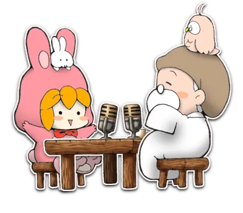
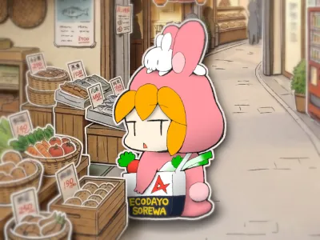
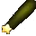
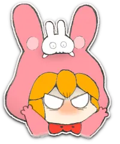
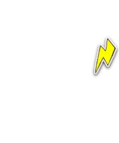
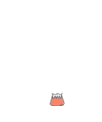

この番組は、喜びを与えない。
なぜなら、あなたが喜びの中心だから。
この番組は、誰の人生も良くしない。
なぜなら、誰もが完璧な配役で、何も良くする必要はないから。
これは、問題の克服を目指すのではなく、「最初から問題はなかった」と、前提を替える番組である✨
🔻ゆっくりと下へ画面スクロールしてください🔻
🎙️ 番組パーソナリティ

Dr. YOU (ドクター・ユー)
世界でも指折りの形而上学博士 (Ph.D. in Philosophy) らしいが、それ以上に日本のオタク文化に沼りすぎて生活もままならない社会不適合者。
だが、その不適合ぶりを全力で自愛する姿は、人生を深刻にとらえて悩めるリスナーたちに安らぎをもたらしているとかいないとか。

ユニちゃん社長 (ユニ・バース)
わずか５歳にして、倒産寸前のラジオ局の跡を継いでしまった健気な幼女。
生活能力のないドクターを拾って彼女の番組にぶっこんだ結果、運よく人気番組となった。
尊大なしゃべりと舌足らずのミスマッチは、大きなお友達の支持を集めているとかいないとか。


ON AIR #001 いけない♥️アイドル 👇画面をタップすると、効果音付きのリッチコンテンツをお楽しみいただけます。 変更・調整したい時は、画面右上のラジオをタップして、お好みの設定にできます。


みんなのアイドル、ユニちゃんでしゅ！


本日は行きつけの中古ショップでプレミア価格10倍の絶版フィギュアを保護できて大満足の Dr. YOU (ドクター・ユー) ですぢゃ♥️


おま、今月の生活費は残りきびちーって口をすっぱくちてゆってたのにまた…耳をなくちたんか！
だいたいフィギュアなどと… 精神的に成長ちた人間は「偶像崇拝」などちないのだから、ドクターなら年相応におちついて局の財政に貢献すゆがとーぜんなのでしゅ！


そんな難しい言葉、よくぞご存知でwww
そーゆーユニちゃそ社長には、年相応なプリ〇ュアの人形をあげませう。
ほれ、受け取るがよい。
かっこよいですぢゃのう♥️


ちい〇わの方がよかったですかのう…



モーロクぢぢい〜〜！